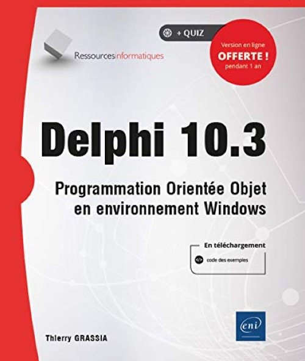

Delphi 10.3 - Programmation orientée objet en environnement Windows
Published by : Editions ENI
Writed by : Thierry Grassia
Published date : 13/01/2021
ISBN-13 : 9782409024665
Language :  Français
Français
About Delphi 10.3 - Programmation orientée objet en environnement Windows
This book is intended for anyone who wants to learn object-oriented programming with the Delphi language (in version 10.3 Community Edition) to develop a windowed application or service in a Windows environment. Throughout the book, the author adds UML schemas to the subject matter so that the reader can see how easy it is to program for Windows with Delphi.
After a presentation of the development environment and a reminder of the basic functions inherited from the Pascal language, the reader studies the architecture and principles of object-oriented programming in Delphi, illustrated by example programs implementing the libraries provided by Delphi 10.3 Community Edition. The handling of the Visual Component Library graphical library allows the reader to concretely understand the creation of attractive, robust and powerful windowed applications.
In the rest of the book, the author familiarizes the reader with the creation of dll libraries or Delphi components that can be included in the development environment before detailing the concept of data serialization in XML and JSON formats as well as the development of system services. Dedicated chapters present the concept of task parallelization under Windows as well as the different methods for communicating between applications, not forgetting the connection to databases thanks to the FireDAC data access engine.
Finally, the reader has the opportunity to discover the FireMonkey framework associated with the LiveBinding engine which offers the portability of the Delphi language to many platforms (Linux, Android or iOS), as well as the development and consumption of REST webservices.
Additional information can be downloaded from the website www.editions-eni.fr.
.This book is intended for anyone who wants to learn object-oriented programming with the Delphi language (in version 10.3 Community Edition) to develop a windowed application or service in a Windows environment. Throughout the book, the author adds UML schemas to the subject matter so that the reader can see how easy it is to program for Windows with Delphi.
After a presentation of the development environment and a reminder of the basic functions inherited from the Pascal language, the reader studies the architecture and principles of object-oriented programming in Delphi, illustrated by example programs implementing the libraries provided by Delphi 10.3 Community Edition. The handling of the Visual Component Library graphical library allows the reader to concretely understand the creation of attractive, robust and powerful windowed applications.
In the rest of the book, the author familiarizes the reader with the creation of dll libraries or Delphi components that can be included in the development environment before detailing the concept of data serialization in XML and JSON formats as well as the development of system services. Dedicated chapters present the concept of task parallelization under Windows as well as the different methods for communicating between applications, not forgetting the connection to databases thanks to the FireDAC data access engine.
Finally, the reader has the opportunity to discover the FireMonkey framework associated with the LiveBinding engine which offers the portability of the Delphi language to many platforms (Linux, Android or iOS), as well as the development and consumption of REST webservices.
Additional information can be downloaded from the website www.editions-eni.fr.
Ce livre s'adresse à toute personne qui souhaite apprendre la programmation orientée objet avec le langage Delphi (en version 10.3 Community Edition) pour développer une application fenêtrée ou un service en environnement Windows. Tout au long du livre, l’auteur agrémente son propos de schémas UML afin que le lecteur puisse constater avec quelle facilité il est possible de programmer pour Windows avec Delphi.
Après une présentation de l’environnement de développement et un rappel sur les fonctions de base héritées du langage Pascal, le lecteur étudie l'architecture et les principes de la programmation orientée objet en Delphi, illustrés par des programmes d'exemple mettant en œuvre les bibliothèques fournies par Delphi 10.3 Community Edition. La manipulation de la bibliothèque graphique Visual Component Library lui permet ainsi d’appréhender concrètement la création d’applications fenêtrées attrayantes, robustes et performantes.
Dans la suite du livre, l’auteur familiarise le lecteur avec la création de librairies dll ou de composants Delphi que l’on peut inclure dans l'environnement de développement avant de détailler la notion de sérialisation de données aux formats XML et JSON ainsi que l'élaboration de services système. Des chapitres dédiés présentent le concept de parallélisation de tâches sous Windows ainsi que les différentes méthodes pour communiquer entre applications, sans oublier la connexion aux bases de données grâce au moteur d'accès aux données FireDAC.
Pour finir, le lecteur a l’occasion de découvrir le framework FireMonkey associé au moteur de LiveBinding qui offre la portabilité du langage Delphi vers de nombreuses plateformes (Linux, Android ou iOS), ainsi que l’élaboration et la consommation de webservices REST.
Des éléments complémentaires sont en téléchargement sur le site www.editions-eni.fr.
Where to buy ?
This book has the ISBN13 "9782409024665".
If it is still available for sale, you can order it in your favorite bookstore, by its publisher or online at
Amazon CA,
Amazon FR,
Amazon JP,
Amazon UK or
Amazon USA depending on your country.